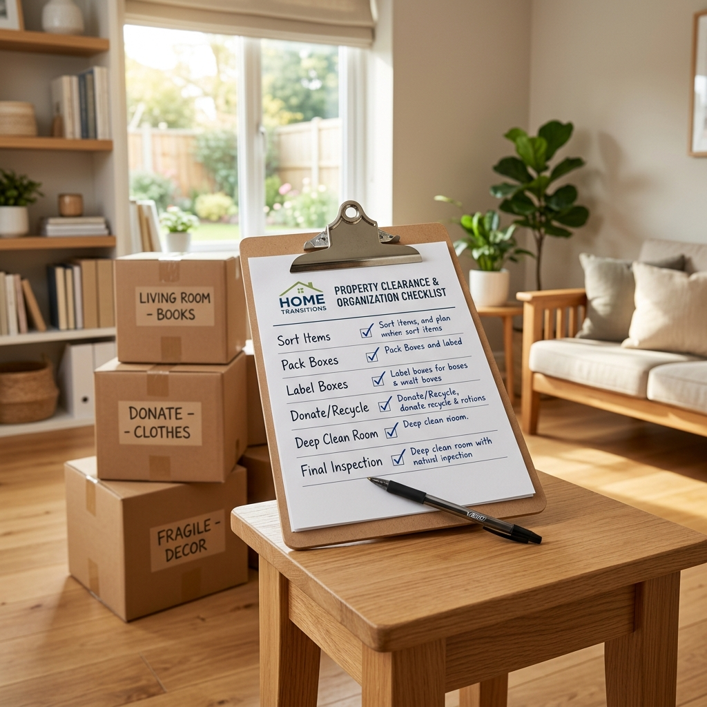

Executor’s Guide: Clearing and Selling an Inherited House in Scotland
Losing a loved one is highly challenging, and dealing with their property can feel overwhelming. Executors in Scotland face a unique legal system, requiring careful handling of Confirmation paperwork, physical belongings, property security, maintenance, and the eventual sale. When multiple heirs are involved, managing these demands can become a stressful second job.
Legal Disclaimer
This guide is for general information only and is not legal advice. Executors and beneficiaries should speak to a Scottish solicitor about their own circumstances before making decisions about an estate or inherited property.
In Scotland, the process for administering estates is different from England and Wales. This guide provides executors with a clear roadmap to manage the house clearance and property sale process safely, ensuring legal compliance and reducing unnecessary delays.
First: What Does “Confirmation” Mean in Scotland?
Before taking any steps to market or sell a deceased person's property, executors must understand the legal term **Confirmation**. Confirmation is the Scottish legal process that gives an executor the official authority to administer and distribute the deceased's estate. It is the direct equivalent of "probate" in England and Wales.
Featured Snippet: Confirmation in Scotland
In Scotland, Confirmation is the legal authority that allows an executor to collect, manage, and distribute someone’s estate. If the estate includes a property, the executor will usually need Confirmation before the house sale can legally settle.
This process has a significant impact on property transactions. As an executor, you can secure the home, obtain professional valuations, and even discuss offers or instruct estate agents before the court grants the certificate. However, if the estate includes a property, the actual settlement and title transfer of the house sale cannot legally complete until Confirmation is formally issued. The transaction remains pending until the executor is granted the legal authority to sign the transfer deeds.
Dealing with Inherited Property?
If you are an executor or beneficiary dealing with an inherited property in Scotland, SB Properties UK can help you understand whether a direct cash sale may be suitable once the legal position is clear.
Get a Confidential ValuationConfirmation gives executors legal authority to deal with the estate.
Can You Clear a House Before Confirmation in Scotland?
A very common question is: *“Can you clear a house before Confirmation in Scotland?”* The query **clearing a house after confirmation Scotland** has significant search volume, but many physical and administrative tasks can—and should—be done early to protect the estate.
Executors are encouraged to secure the building, take utility meter readings, clean out food, and search for the Will and title deeds immediately. However, you must be extremely careful when dealing with valuables. Belongings like jewelry, art, and vehicles form part of the estate. Disposing of or gifting these items before a professional valuation is completed can lead to personal liability or inheritance disputes. The safest approach is to take photographs of each room, compile a thorough inventory, keep receipts for any upkeep costs, and consult beneficiaries before removing anything of value. Once Confirmation is granted, the executor has clearer authority to deal with the estate assets.
What You Can Usually Do Early
Prior to receiving Confirmation, you should focus on tasks that protect the property and locate important information:
- Secure the property: Lock all doors and windows, set alarms, and check for immediate hazards.
- Check windows and doors: Ensure all access points are sturdy, functional, and weather-tight.
- Inform the insurer: Notify the current insurer that the house is unoccupied, as standard cover may become void.
- Take meter readings: Document gas and electricity levels to prevent utility overcharging.
- Locate paperwork: Search for Wills, title deeds, insurance documents, and financial files.
- Remove perishable food: Empty the fridge and cupboards to prevent pests and unpleasant odors.
- Protect valuables: Place cash, jewelry, and specific sentimental items in a safe, secure location.
- Photograph rooms and contents: Create a visual record of the property's condition for estate records.
- Keep records: Keep receipts for any repairs, locks, or security systems you purchase for the property.
- Check for leaks, damp, heating, and urgent maintenance issues: Inspect the home regularly to prevent winter damage.
What You Should Be Careful With
Avoid taking actions that could reduce the estate value or violate legal guidelines before receiving formal authority:
- Selling valuable items: Never sell cars, antiques, or jewelry without formal valuation and solicitor approval.
- Clearing antiques, jewelry, vehicles, art, or collections: These items must be declared for inheritance tax calculations.
- Throwing away paperwork: Avoid shredding old letters or receipts until you are sure they are not needed for tax filings.
- Removing items other beneficiaries may dispute: Keep all distributions transparent to prevent family conflict.
- Canceling services too early: Ensure the heating stays on during winter months to avoid burst pipes.
- Spending estate funds without records: Document every penny spent on the property to show the beneficiaries.
- Allowing the property to sit uninsured or unsecured: Failing to maintain insurance is a breach of your executor duties.

Keep records, photograph contents, and get guidance before clearing valuable items.
Step-by-Step Checklist for Clearing an Inherited House
To organize your tasks, follow this step-by-step **inherited house clearance Scotland** checklist. Breaking down the process makes the executorship manageable.
- Secure the property: Ensure the home is locked. Change locks if keys are missing.
- Inform the insurer: Arrange specialist empty property insurance to keep the building covered.
- Take photos and make an inventory: Catalog the rooms and items for tax reporting and family records.
- Find key documents: Search for the Will, title deeds, insurance policies, and financial accounts.
- Check for valuables and sentimental items: Check hidden places for cash or jewelry. Set aside specific bequests.
- Speak with beneficiaries: Agree on who will inherit specific physical possessions.
- Get valuations where needed: Hire professional surveyors to value the building and valuables.
- Arrange house clearance: Coordinate family help or hire a clearance team to dispose of rubbish and donate items.
- Clean and prepare the property: Perform a thorough deep clean and tidy the garden.
- Decide whether to repair, sell as-is, use an estate agent, go to auction, or contact a cash buyer: Choose the route that matches your timeline.
Should You Repair an Inherited House Before Selling?
Inherited homes in Glasgow or Paisley are often dated and need modernization. Executors must decide whether to fund renovations or sell in as-is condition. While repairs can increase the market value, they require upfront estate cash, coordinate contractors, and prolong the sale. The holding costs—including unoccupied insurance, council tax premiums, and winter heating—accumulate rapidly, eating into the estate value.
Basic cleaning, garden tidying, and minor safety fixes are always worth considering. However, major work like a new kitchen or bathroom rarely makes sense if the beneficiaries want a straightforward, quick settlement. In these cases, selling to a direct cash buyer who accepts properties in any condition is highly practical.
| Repair Type | Example | Usually Worth Considering? | Notes |
|---|---|---|---|
| Basic cleaning | Deep cleaning carpets and kitchens | Yes | Improves property odor and presentation at a minimal cost. |
| Garden tidy | Mowing lawns and cutting hedges | Yes | Improves initial kerb appeal and keeps the home looking occupied. |
| Minor repairs | Fixing loose handrails or leaking pipes | Yes | Protects visitors' safety and prevents minor damp issues. |
| New kitchen or bathroom | Replacing dated suites and cabinets | Rarely | High upfront expense; buyers usually prefer choosing their own layout. |
| Full renovation | Rewiring, heating upgrades, plastering | No | Rarely yields a full financial return and delays estate closure by months. |
| Damp, roof, or electrical work | Damp-proofing or tiling repairs | Case-by-case | Required for traditional mortgages. If unfunded, consider cash buyers. |
Executors should weigh repair costs against the likely uplift and timescale.
Selling an Inherited House in Scotland: Your Main Routes
When the property is ready, you must choose how to sell. There are four primary routes available to Scottish executors, each offering different levels of certainty, cost, and speed.
1. Traditional Estate Agent
Listing the property publicly is best for modern homes in high-demand areas where achieving the maximum price is the goal. However, you must pay for a Home Report upfront. You also face the risk of property chain collapses, buyer mortgage rejections, and ongoing holding costs during the months it takes to complete.
2. Property Auction
Auctions offer a secure contract immediately at the fall of the hammer, with completion taking 28 days. This is suitable for properties in poor condition that struggle to attract traditional mortgage buyers. However, entry fees, commissions, and upfront Home Report costs still apply.
3. Direct Cash Buyer
A direct buyer purchases the property directly from the executor. This is the fastest method, bypassing public marketing, skipping the Home Report, and avoiding estate agent commissions. The buyer takes the home in its current condition, including remaining contents. This offers high certainty and speed, with completion scheduled to align with the Confirmation grant.
4. Selling to a Family Member or Beneficiary
Sometimes, an heir wishes to buy out the other beneficiaries and keep the property. This keeps the asset in the family but requires professional RICS valuations to ensure fairness. Funding and mortgage approvals for the purchasing family member can take time.
Each selling route has different advantages, costs, and certainty.
| Route | Best For | Pros | Cons | Certainty |
|---|---|---|---|---|
| Estate Agent | Good condition homes; maximizing value | Achieves maximum open-market price | Slow timeline, chain collapse risk, Home Report fees | Low |
| Auction | Un-mortgageable properties; run-down houses | Binding sale, fast closing | High entry fees, risk of low reserve sale | Medium |
| Direct Cash Buyer | Fast estate settlement; dated properties | Speed, no fees, buy as-is, no Home Report | Lower purchase price than open market | Very High |
| Family Member | Keeping property in the family | Smooth transition, keeps asset | Financing delays, potential valuation disputes | Medium |
Want a Straightforward Sale?
If the property is empty, dated, difficult to manage, or costing the estate money, SB Properties UK can discuss a straightforward cash sale with no pressure to proceed.
Request a Cash OfferEstate Agent vs Cash Buyer for an Inherited Property
Choosing between an estate agent and a cash buyer requires balancing the final sale price against speed and convenience. Traditional buyers often require months to complete, and if they pull out, the estate continues to pay empty home insurance, utilities, and council tax. A cash buyer offers lower upfront stress, buying the house directly in as-is condition. For a detailed breakdown, you can read our comparison of estate agent vs cash buyer fees in Scotland.
Costs to Think About When an Inherited House Is Sitting Empty
Failing to sell quickly means managing ongoing expenses on an unoccupied property. Executors must plan for:
- Specialist insurance: Unoccupied properties require expensive void insurance.
- Council tax: Long-term empty houses face a 200% premium.
- Utilities: Heating must run to prevent burst pipe risks.
- Security: Upkeep of locks and security checks.
- Garden maintenance: Tidy lawns prevent signs of abandonment.
- Repairs: Sudden structural issues, roof leaks, or damp treatment.
- Mortgage: Ongoing debt repayments if applicable.
- Legal fees: Executry and property transfer fees.
- Home Report & Marketing: Upfront expenses for estate agent sales.
- House clearance costs: Disposal of unwanted furniture.
For more details on these figures, read our guide on empty property costs in Central Scotland.
Can You Sell an Inherited House Fast in Scotland?
Yes, but you must work around the legal timeline. While the sale cannot complete until Confirmation is issued, you can agree on a purchase price with a cash buyer early. SB Properties UK regularly arranges sales that complete within days of the court issuing Confirmation, providing a guaranteed exit timeline for the family.
When a Cash Buyer May Be Useful for an Executor
A direct cash sale is highly practical in several scenarios:
- Property needs work: Bypasses the need for expensive repairs.
- House is empty and costing money: Stops council tax and insurance bills.
- Family wants a clean break: Resolves the estate quickly for all heirs.
- Beneficiaries disagree about repairs: Eliminates disputes about modernization budgets.
- Executor lives far away: Removes the burden of managing maintenance and viewings.
- The property has tenants: Handles tenant issues and notices.
- Failed open-market sales: Provides a reliable back-up.
- Executor wants to avoid viewings: Bypasses public viewings during grief.
- Property is in Glasgow or Paisley: Relies on local buyers who understand Renfrewshire and Central Scotland.
How SB Properties UK Can Help With Inherited Property Sales
At SB Properties UK, we help executors and families settle estates easily. We discuss the property, provide a direct cash offer, and work around the Sheriff Court's timeline. We buy homes in any condition, handle remaining contents, and charge no estate agent fees. There is no pressure or obligation to proceed.
For more legal and practical guidance, see our guides on selling inherited property in Scotland and how to sell a probate house in Scotland.
Inherited House Sale FAQs for Scotland
What is Confirmation in Scotland?
Confirmation is the legal document issued by the Sheriff Court giving an executor the authority to manage the deceased's estate. It is the Scottish equivalent of probate and is required before a property sale can legally complete.
Can you sell a house before Confirmation is granted?
Yes. You can market the house and accept an offer before Confirmation is granted. However, the legal sale cannot settle or close until the Sheriff Court formally issues the Confirmation certificate.
Can you clear a house before Confirmation?
Yes. You can secure the building and clean out rubbish. However, you should not sell or distribute valuable possessions until they have been valued and all beneficiaries agree.
Who is responsible for clearing an inherited house?
The executor is responsible for clearing the property. They can clear it themselves or hire a professional company, paying the costs from the estate funds before distribution.
Do I need a Home Report to sell an inherited property?
A Home Report is legally required if you list the property publicly through an estate agent. It is not required if you sell the property directly to a cash buyer off-market.
Should I renovate an inherited house before selling?
No. Major renovations cost significant time and money. Focus on basic cleaning and garden maintenance, or sell the property as-is to a direct buyer.
Can a cash buyer buy an inherited house?
Yes. Cash buyers purchase properties directly from executors, buying them as-is and completing the sale once Confirmation is issued.
Can beneficiaries stop an executor selling a house?
Executors have the legal right to administer the estate. Beneficiaries can challenge an executor in court if they believe they are acting improperly, but they cannot block a valid sale needed to pay debts.
How long does it take to sell an inherited house in Scotland?
Traditional sales take 4 to 9 months. Direct cash sales can conclude within 7 to 28 days of Confirmation being granted.
What happens if the inherited property has a mortgage?
The executor must notify the mortgage lender. Outstanding loans must be paid off from the estate funds or the proceeds of the house sale upon completion.
Can I sell an inherited house in Paisley or Glasgow quickly?
Yes. SB Properties UK regularly purchases inherited properties in Glasgow, Paisley, and Central Scotland for cash, bypassing traditional chains.
Is this article legal advice?
No. This guide is for general information only. Executors and beneficiaries should consult a qualified Scottish solicitor about their specific estate circumstances.
Final Thoughts: Make the Process Clear, Calm, and Manageable
Handling an estate property doesn't have to be a second job. Start by securing the property and arranging void home insurance. Work closely with a Scottish solicitor to manage the court paperwork, and document all maintenance expenses. Before committing to extensive repairs, compare your selling options. Bypassing the open market and selling to a direct cash buyer is often the most practical, stress-free route for busy executors.
Talk to Our Team Today
To discuss selling an inherited house in Scotland, contact SB Properties UK for a calm, no-obligation conversation about your options.
Get in TouchFor more legal and practical guidance, we recommend consulting these trusted resources: